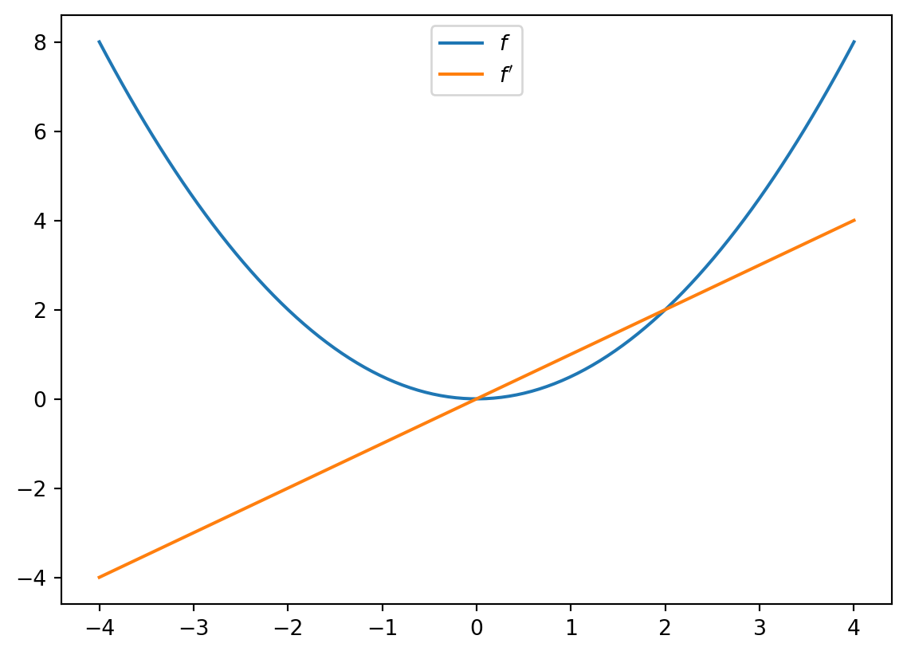

import jax
import jax.numpy as jnpAn Introduction to JAX
This notebook (adapted Quantecon) provides a short introduction to Google JAX.
JAX as a NumPy Replacement
One way to use JAX is as a plug-in NumPy replacement. Let’s look at the similarities and differences.
Similarities
The following import is standard, replacing import numpy as np:
Now we can use jnp in place of np for the usual array operations:
a = jnp.asarray((1.0, 3.2, -1.5))print(a)[ 1. 3.2 -1.5]print(jnp.sum(a))2.7print(jnp.mean(a))0.90000004print(jnp.dot(a, a))13.490001However, the array object a is not a NumPy array:
aArray([ 1. , 3.2, -1.5], dtype=float32)type(a)jaxlib.xla_extension.ArrayImplEven scalar-valued maps on arrays return JAX arrays.
jnp.sum(a)Array(2.7, dtype=float32)JAX arrays are also called “device arrays,” where term “device” refers to a hardware accelerator (GPU or TPU).
(In the terminology of GPUs, the “host” is the machine that launches GPU operations, while the “device” is the GPU itself.)
Operations on higher dimensional arrays are also similar to NumPy:
A = jnp.ones((2, 2))
B = jnp.identity(2)
A @ BArray([[1., 1.],
[1., 1.]], dtype=float32)from jax.numpy import linalglinalg.inv(B) # Inverse of identity is identityArray([[1., 0.],
[0., 1.]], dtype=float32)linalg.eigh(B) # Computes eigenvalues and eigenvectorsEighResult(eigenvalues=Array([1., 1.], dtype=float32), eigenvectors=Array([[1., 0.],
[0., 1.]], dtype=float32))Differences
One difference between NumPy and JAX is that JAX currently uses 32 bit floats by default.
This is standard for GPU computing and can lead to significant speed gains with small loss of precision.
However, for some calculations precision matters. In these cases 64 bit floats can be enforced via the command
jax.config.update("jax_enable_x64", True)Let’s check this works:
jnp.ones(3)Array([1., 1., 1.], dtype=float64)As a NumPy replacement, a more significant difference is that arrays are treated as immutable.
For example, with NumPy we can write
import numpy as np
a = np.linspace(0, 1, 3)
aarray([0. , 0.5, 1. ])and then mutate the data in memory:
a[0] = 1
aarray([1. , 0.5, 1. ])In JAX this fails:
a = jnp.linspace(0, 1, 3)
aArray([0. , 0.5, 1. ], dtype=float64)# a[0] = 1In line with immutability, JAX does not support inplace operations:
a = np.array((2, 1))
a.sort()
aarray([1, 2])a = jnp.array((2, 1))
a_new = a.sort()
a, a_new(Array([2, 1], dtype=int64), Array([1, 2], dtype=int64))The designers of JAX chose to make arrays immutable because JAX uses a functional programming style. More on this below.
Note that, while mutation is discouraged, it is in fact possible with at, as in
a = jnp.linspace(0, 1, 3)
id(a)110315613819424aArray([0. , 0.5, 1. ], dtype=float64)a.at[0].set(1)Array([1. , 0.5, 1. ], dtype=float64)We can check that the array is mutated by verifying its identity is unchanged:
id(a)110315613819424Random Numbers
Random numbers are also a bit different in JAX, relative to NumPy. Typically, in JAX, the state of the random number generator needs to be controlled explicitly.
import jax.random as randomFirst we produce a key, which seeds the random number generator.
key = random.PRNGKey(1)type(key)jaxlib.xla_extension.ArrayImplprint(key)[0 1]Now we can use the key to generate some random numbers:
x = random.normal(key, (3, 3))
xArray([[-1.35247421, -0.2712502 , -0.02920518],
[ 0.34706456, 0.5464053 , -1.52325812],
[ 0.41677264, -0.59710138, -0.5678208 ]], dtype=float64)If we use the same key again, we initialize at the same seed, so the random numbers are the same:
random.normal(key, (3, 3))Array([[-1.35247421, -0.2712502 , -0.02920518],
[ 0.34706456, 0.5464053 , -1.52325812],
[ 0.41677264, -0.59710138, -0.5678208 ]], dtype=float64)To produce a (quasi-) independent draw, best practice is to “split” the existing key:
key, subkey = random.split(key)random.normal(key, (3, 3))Array([[ 1.85374374, -0.37683949, -0.61276867],
[-1.91829718, 0.27219409, 0.54922246],
[ 0.40451442, -0.58726839, -0.63967753]], dtype=float64)random.normal(subkey, (3, 3))Array([[-0.4300635 , 0.22778552, 0.57241269],
[-0.15969178, 0.46719192, 0.21165091],
[ 0.84118631, 1.18671326, -0.16607783]], dtype=float64)The function below produces k (quasi-) independent random n x n matrices using this procedure.
def gen_random_matrices(key, n, k):
matrices = []
for _ in range(k):
key, subkey = random.split(key)
matrices.append(random.uniform(subkey, (n, n)))
return matricesmatrices = gen_random_matrices(key, 2, 2)
for A in matrices:
print(A)[[0.97440813 0.3838544 ]
[0.9790686 0.99981046]]
[[0.3473302 0.17157842]
[0.89346686 0.01403153]]One point to remember is that JAX expects tuples to describe array shapes, even for flat arrays. Hence, to get a one-dimensional array of normal random draws we use (len, ) for the shape, as in
random.normal(key, (5, ))Array([-0.64377279, 0.76961857, -0.29809604, 0.47858776, -2.00591299], dtype=float64)JIT compilation
The JAX just-in-time (JIT) compiler accelerates logic within functions by fusing linear algebra operations into a single optimized kernel that the host can launch on the GPU / TPU (or CPU if no accelerator is detected).
A first example
To see the JIT compiler in action, consider the following function.
def f(x):
a = 3*x + jnp.sin(x) + jnp.cos(x**2) - jnp.cos(2*x) - x**2 * 0.4 * x**1.5
return jnp.sum(a)Let’s build an array to call the function on.
n = 50_000_000
x = jnp.ones(n)How long does the function take to execute?
%time f(x).block_until_ready()CPU times: user 5.86 s, sys: 5.51 s, total: 11.4 s
Wall time: 3.47 sArray(2.19896006e+08, dtype=float64)Here, in order to measure actual speed, we use the `block_until_ready()` method
to hold the interpreter until the results of the computation are returned from
the device. This is necessary because JAX uses asynchronous dispatch, which
allows the Python interpreter to run ahead of GPU computations.
The code doesn’t run as fast as we might hope, given that it’s running on a GPU.
But if we run it a second time it becomes much faster:
%time f(x).block_until_ready()CPU times: user 6.29 s, sys: 5.53 s, total: 11.8 s
Wall time: 3.16 sArray(2.19896006e+08, dtype=float64)This is because the built in functions like jnp.cos are JIT compiled and the first run includes compile time.
Why would JAX want to JIT-compile built in functions like jnp.cos instead of just providing pre-compiled versions, like NumPy?
The reason is that the JIT compiler can specialize on the size of the array being used, which is helpful for parallelization.
For example, in running the code above, the JIT compiler produced a version of jnp.cos that is specialized to floating point arrays of size n = 50_000_000.
We can check this by calling f with a new array of different size.
m = 50_000_001
y = jnp.ones(m)%time f(y).block_until_ready()CPU times: user 6.03 s, sys: 5.18 s, total: 11.2 s
Wall time: 3.43 sArray(2.19896011e+08, dtype=float64)Notice that the execution time increases, because now new versions of the built-ins like jnp.cos are being compiled, specialized to the new array size.
If we run again, the code is dispatched to the correct compiled version and we get faster execution.
%time f(y).block_until_ready()CPU times: user 6.5 s, sys: 5.74 s, total: 12.2 s
Wall time: 3.24 sArray(2.19896011e+08, dtype=float64)The compiled versions for the previous array size are still available in memory too, and the following call is dispatched to the correct compiled code.
%time f(x).block_until_ready()CPU times: user 5.1 s, sys: 4.84 s, total: 9.93 s
Wall time: 2.83 sArray(2.19896006e+08, dtype=float64)Compiling the outer function
We can do even better if we manually JIT-compile the outer function.
f_jit = jax.jit(f) # target for JIT compilationLet’s run once to compile it:
f_jit(x)Array(2.19896006e+08, dtype=float64)And now let’s time it.
%time f_jit(x).block_until_ready()CPU times: user 5.91 s, sys: 497 ms, total: 6.41 s
Wall time: 1.48 sArray(2.19896006e+08, dtype=float64)Note the speed gain.
This is because the array operations are fused and no intermediate arrays are created.
Incidentally, a more common syntax when targetting a function for the JIT compiler is
@jax.jit
def f(x):
a = 3*x + jnp.sin(x) + jnp.cos(x**2) - jnp.cos(2*x) - x**2 * 0.4 * x**1.5
return jnp.sum(a)Functional Programming
From JAX’s documentation:
When walking about the countryside of Italy, the people will not hesitate to tell you that JAX has “una anima di pura programmazione funzionale”.
In other words, JAX assumes a functional programming style.
The major implication is that JAX functions should be pure.
A pure function will always return the same result if invoked with the same inputs.
In particular, a pure function has
- no dependence on global variables and
- no side effects
JAX will not usually throw errors when compiling impure functions but execution becomes unpredictable.
Here’s an illustration of this fact, using global variables:
a = 1 # global
@jax.jit
def f(x):
return a + xx = jnp.ones(2)f(x)Array([2., 2.], dtype=float64)In the code above, the global value a=1 is fused into the jitted function.
Even if we change a, the output of f will not be affected — as long as the same compiled version is called.
a = 42f(x)Array([2., 2.], dtype=float64)Changing the dimension of the input triggers a fresh compilation of the function, at which time the change in the value of a takes effect:
x = jnp.ones(3)f(x)Array([43., 43., 43.], dtype=float64)Moral of the story: write pure functions when using JAX!
Gradients
JAX can use automatic differentiation to compute gradients.
This can be extremely useful for optimization and solving nonlinear systems.
We will see significant applications later in this lecture series.
For now, here’s a very simple illustration involving the function
def f(x):
return (x**2) / 2Let’s take the derivative:
f_prime = jax.grad(f)f_prime(10.0)Array(10., dtype=float64, weak_type=True)Let’s plot the function and derivative, noting that \(f'(x) = x\).
import matplotlib.pyplot as plt
fig, ax = plt.subplots()
x_grid = jnp.linspace(-4, 4, 200)
ax.plot(x_grid, f(x_grid), label="$f$")
ax.plot(x_grid, [f_prime(x) for x in x_grid], label="$f'$")
ax.legend(loc='upper center')
plt.show()
We defer further exploration of automatic differentiation with JAX until {doc}autodiff.
Writing vectorized code
Writing fast JAX code requires shifting repetitive tasks from loops to array processing operations, so that the JAX compiler can easily understand the whole operation and generate more efficient machine code.
This procedure is called vectorization or array programming, and will be familiar to anyone who has used NumPy or MATLAB.
In most ways, vectorization is the same in JAX as it is in NumPy.
But there are also some differences, which we highlight here.
As a running example, consider the function
\[ f(x,y) = \frac{\cos(x^2 + y^2)}{1 + x^2 + y^2} \]
Suppose that we want to evaluate this function on a square grid of \(x\) and \(y\) points and then plot it.
To clarify, here is the slow for loop version.
@jax.jit
def f(x, y):
return jnp.cos(x**2 + y**2) / (1 + x**2 + y**2)
n = 80
x = jnp.linspace(-2, 2, n)
y = x
z_loops = np.empty((n, n))%%time
for i in range(n):
for j in range(n):
z_loops[i, j] = f(x[i], y[j])CPU times: user 1.48 s, sys: 11.3 ms, total: 1.49 s
Wall time: 1.49 sEven for this very small grid, the run time is extremely slow.
(Notice that we used a NumPy array for z_loops because we wanted to write to it.)
OK, so how can we do the same operation in vectorized form?
If you are new to vectorization, you might guess that we can simply write
z_bad = f(x, y)But this gives us the wrong result because JAX doesn’t understand the nested for loop.
z_bad.shape(80,)Here is what we actually wanted:
z_loops.shape(80, 80)To get the right shape and the correct nested for loop calculation, we can use a meshgrid operation designed for this purpose:
x_mesh, y_mesh = jnp.meshgrid(x, y)Now we get what we want and the execution time is very fast.
%%time
z_mesh = f(x_mesh, y_mesh).block_until_ready()CPU times: user 33.8 ms, sys: 1.47 ms, total: 35.3 ms
Wall time: 34.4 msLet’s run again to eliminate compile time.
%%time
z_mesh = f(x_mesh, y_mesh).block_until_ready()CPU times: user 1.08 ms, sys: 71 μs, total: 1.15 ms
Wall time: 691 μsLet’s confirm that we got the right answer.
jnp.allclose(z_mesh, z_loops)Array(True, dtype=bool)Now we can set up a serious grid and run the same calculation (on the larger grid) in a short amount of time.
n = 6000
x = jnp.linspace(-2, 2, n)
y = x
x_mesh, y_mesh = jnp.meshgrid(x, y)%%time
z_mesh = f(x_mesh, y_mesh).block_until_ready()CPU times: user 707 ms, sys: 165 ms, total: 872 ms
Wall time: 219 msLet’s run again to get rid of compile time.
%%time
z_mesh = f(x_mesh, y_mesh).block_until_ready()CPU times: user 862 ms, sys: 216 ms, total: 1.08 s
Wall time: 326 msBut there is one problem here: the mesh grids use a lot of memory.
x_mesh.nbytes + y_mesh.nbytes576000000By comparison, the flat array x is just
x.nbytes # and y is just a pointer to x48000This extra memory usage can be a big problem in actual research calculations.
So let’s try a different approach using jax.vmap
First we vectorize f in y.
f_vec_y = jax.vmap(f, in_axes=(None, 0)) In the line above, (None, 0) indicates that we are vectorizing in the second argument, which is y.
Next, we vectorize in the first argument, which is x.
f_vec = jax.vmap(f_vec_y, in_axes=(0, None))With this construction, we can now call the function \(f\) on flat (low memory) arrays.
%%time
z_vmap = f_vec(x, y).block_until_ready()CPU times: user 917 ms, sys: 203 ms, total: 1.12 s
Wall time: 339 msWe run it again to eliminate compile time.
%%time
z_vmap = f_vec(x, y).block_until_ready()CPU times: user 759 ms, sys: 252 ms, total: 1.01 s
Wall time: 284 msThe execution time is essentially the same as the mesh operation but we are using much less memory.
And we produce the correct answer:
jnp.allclose(z_vmap, z_mesh)Array(True, dtype=bool)